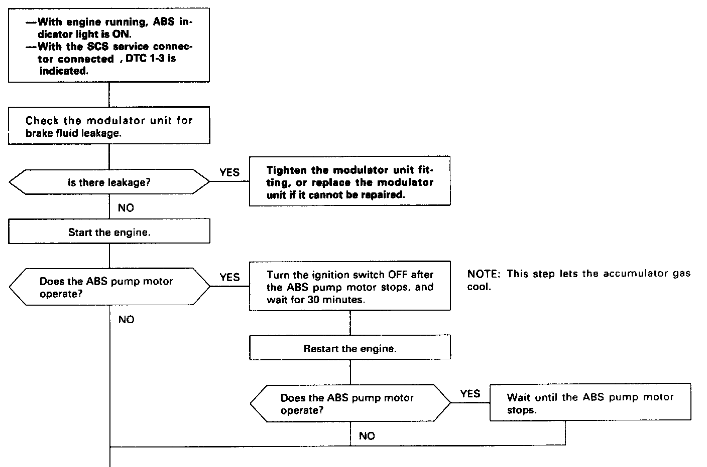
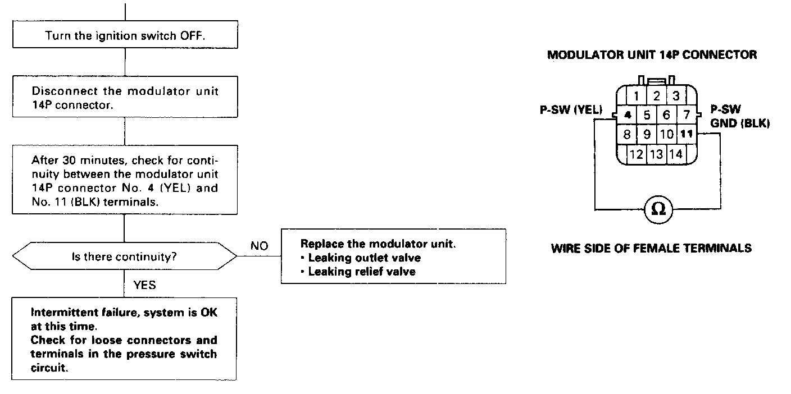

DTC 1-3
Part (1 Of 2):

Part (2 Of 2):

Diagnostic Trouble Code (DTC) 1-3: High Pressure Leakage Diagnosis
The ABS control unit counts the number of times that the ABS pump motor operates and stops during regular diagnosis. When the ABS pump motor repeatedly operates and stops, the ABS control unit determines that the high pressure system is leaking and turns the ABS indicator light on.
This count is reset when the ABS functions.
Possible causes:
- Leaking outlet valve
- Leaking relief valve
- Poor contact in pressure switch circuit